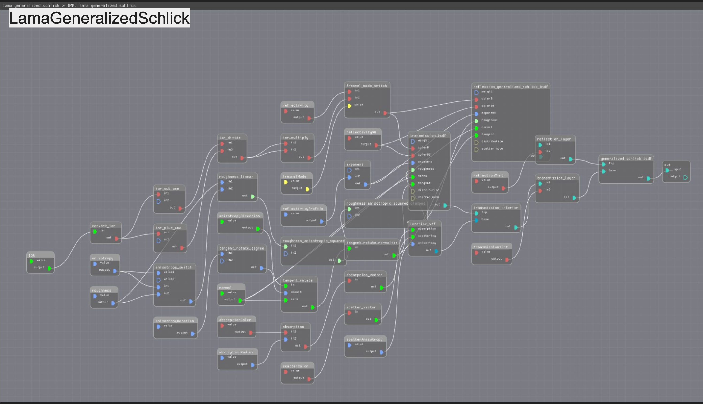
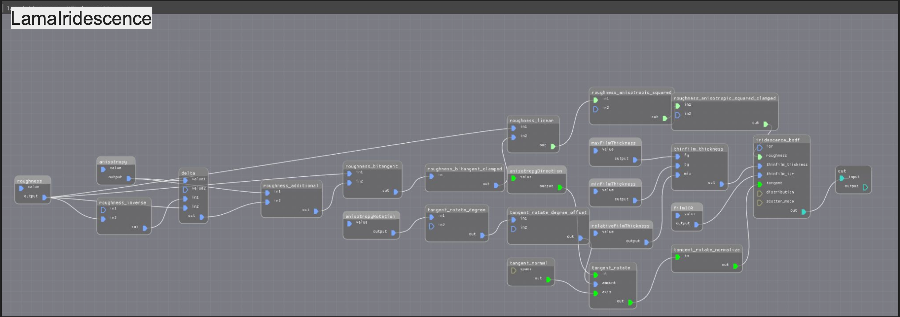
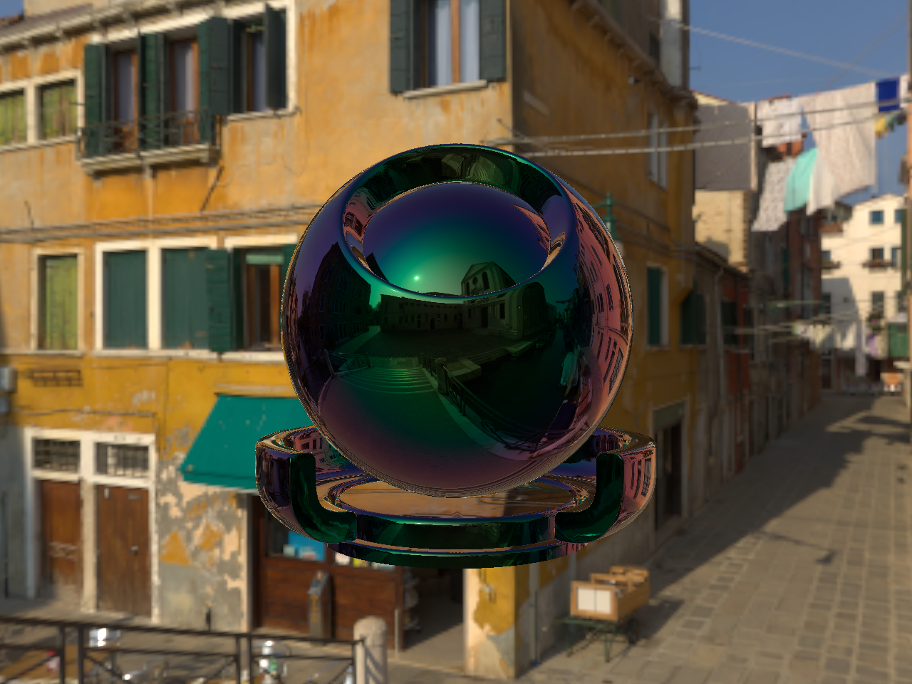
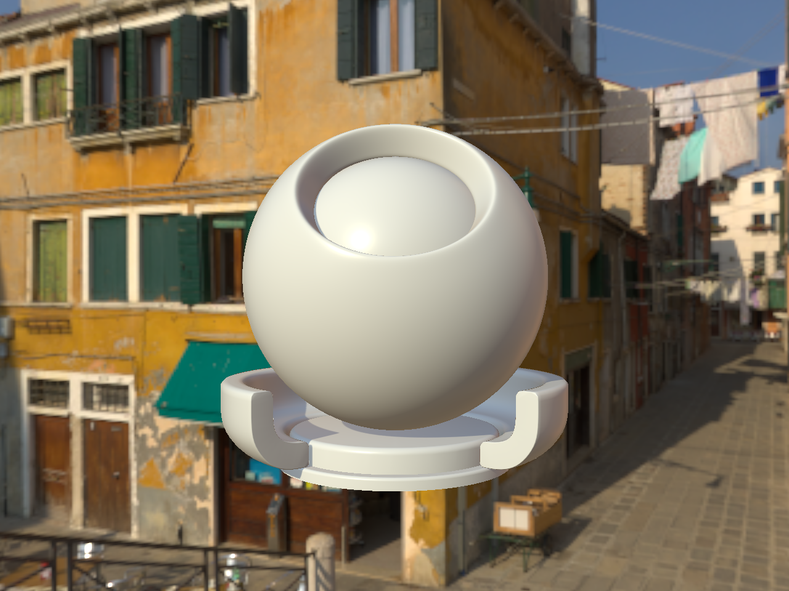
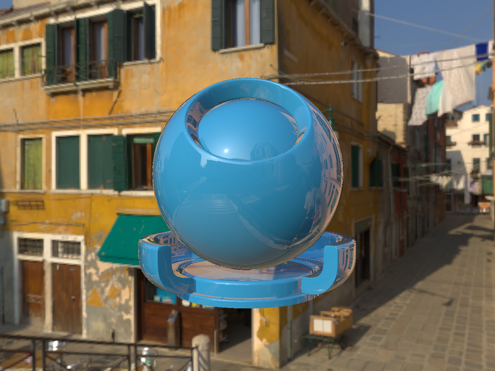
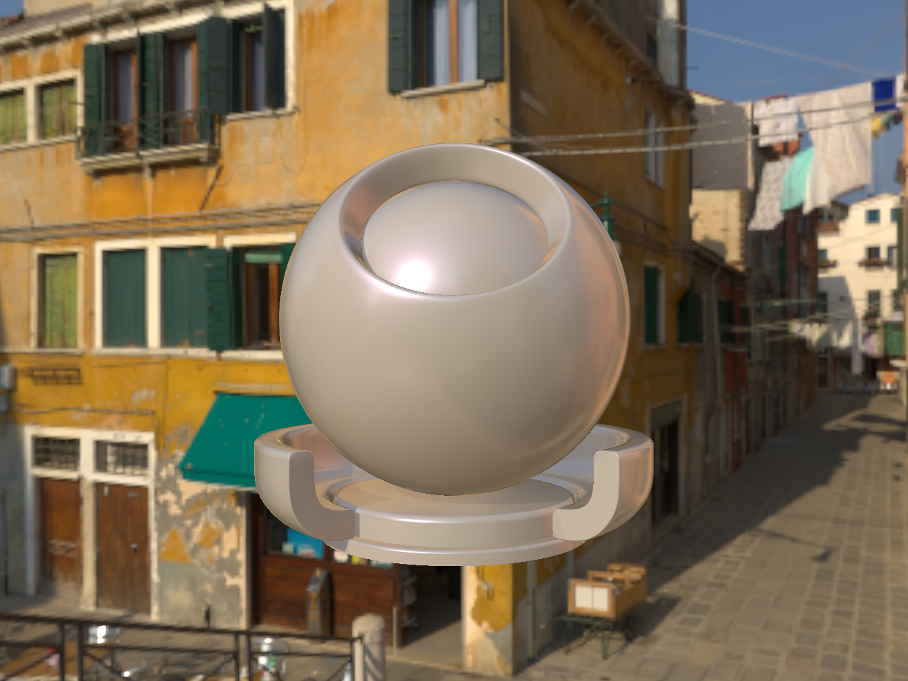

MaterialX
Created advanced shaders and shader translation graphs for MaterialX, an open-source rendering standard.
Background
During my Lucasfilm internship, I worked on MaterialX, an open-source framework for rendering materials across different environments and implementations.
I specifically contributed to two MaterialX subprojects—MaterialX Lama and OpenPBR.
MaterialX Lama
MaterialX Lama is a state-of-the-art material layering system, developed at ILM and used in Pixar RenderMan. By the time of my project, its MaterialX integration hadn’t been updated since 2021. My work clarified its future direction and aligned with ongoing collaboration between Lucasfilm/ILM and Pixar.
I developed two new Lama nodes—LamaGeneralizedSchlick and LamaIridescence—based on Pixar RenderMan definitions. Additionally, I updated the entire Lama suite to match RenderMan's default values and definitions for consistency.
LamaGeneralizedSchlick and LamaIridescence


updated Lama suite

OpenPBR
OpenPBR is a new shading model developed by Adobe, Autodesk, and MaterialX, released in 2023. In contrast, Standard Surface, developed by Autodesk, has been widely used for some time. These models differ in their implementations of physically based properties like coat, metal, and sheen, making direct translation between them a challenge in achieving visual parity.
To bridge this gap, I developed shader translation and reverse shader translation graphs to convert assets between Standard Surface and OpenPBR. This allows users to adopt OpenPBR while maintaining compatibility with assets created in Standard Surface, and vice versa for those using older MaterialX versions that don’t yet support OpenPBR.
standard surface -> openPBR (goal: visual parity)
copper (standard surface) translated to copper (openPBR)
brass (standard surface) translated to brass (openPBR)
thin film (standard surface) translated to thin film (openPBR)

openPBR -> standard surface (goal: visual parity)
default (openPBR) translated to default (standard surface)

carpaint (openPBR) translated to carpaint (standard surface)

glass (openPBR) translated to glass (standard surface)
ketchup (openPBR) translated to ketchup (standard surface)
pearl (openPBR) translated to pearl (standard surface)

Links
Check out my specific contributions to MaterialX!